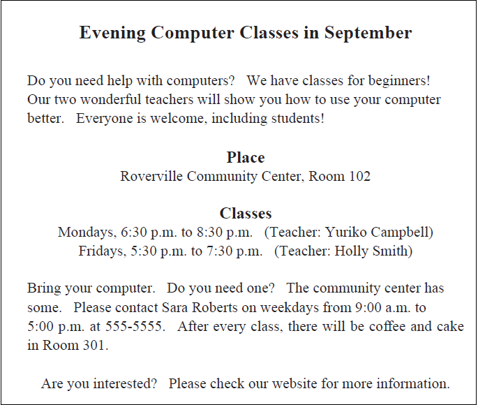
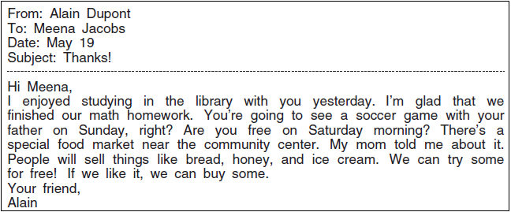
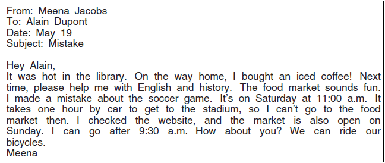
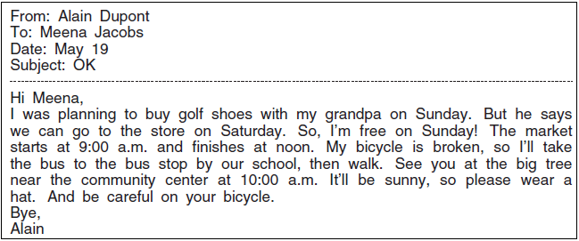
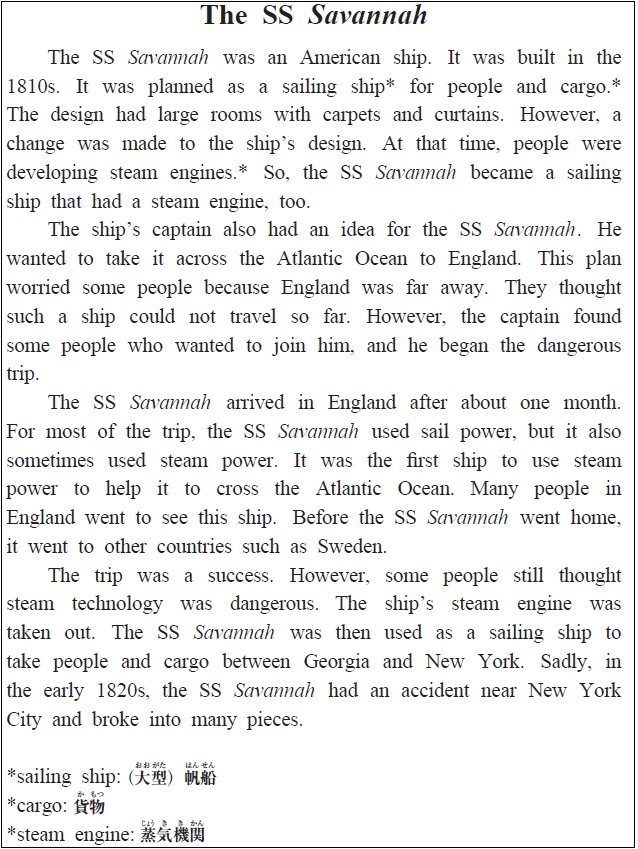

英語検定 ３級(2024年第2回No.3) 残り時間が0になると、自動的に採点します。 時間内に終了する場合は、一番下の「採点する」のボタンを押してください。 残り時間： 分 秒 No 英語検定３級筆記(2024年第2回) 3A 次の掲示の内容に関して、(21)と(22)の質問に対する答えとして 最も適切なもの、または文を完成させるのに最も適切なものを、 解答欄の1～4の中から一つ選びなさい。  No21 Who is this notice for? 1 People who want to sell their computers. 2 Students who know a lot about computers. 3 Students who need to buy a computer. 4 People who want to learn more about computers. 答え： 1 2 3 4 No22 If people want to borrow a computer, they should 1 or 2 or 3 or 4 1 call Sara Roberts. 2 go to Room 102. 3 talk to one of the teachers. 4 go to the community center website. 答え： 1 2 3 4 3B 次のEメールの内容に関して、(23)から(25)までの質問に対する答えとして最も適切なもの、 または文を完成させるのに最も適切なものを、解答欄の1～4の中から一つ選びなさい。    No23 Who told Alain about the food market? 1 Meena’s teacher. 2 Meena’s father. 3 Alain’s mother. 4 Alain’s grandfather. 答え： 1 2 3 4 No24 What is Meena going to do on Saturday? 1 Watch a soccer game with her father. 2 Play golf with her grandfather. 3 Ride her bicycle to Alain’s house. 4 Take a bus to the community center. 答え： 1 2 3 4 No25 What will happen at noon on Sunday? 1 The food market will end. 2 Alain will call his grandfather. 3 A tree will be cut down. 4 Alain will arrive at the community center. 答え： 1 2 3 4 3C 次の英文の内容に関して、(26)から(30)までの質問に対する答えとして最も適切なもの、 または文を完成させるのに最も適切なものを、解答欄の1～4の中から一つ選びなさい。  No26 How did the plan for the SS Savannah change? 1 A steam engine was added. 2 The captain made the ship much bigger. 3 The curtains were taken off the ship. 4 Some rooms were made smaller. 答え： 1 2 3 4 No27 Why were some people worried? 1 They thought England wanted to keep the ship. 2 The ship’s captain was not a good captain. 3 The ship’s captain wanted too much money. 4 They thought the ship could not travel a long way. 答え： 1 2 3 4 No28 When the ship arrived in England, 1 or 2 or 3 or 4 1 many people went to see it. 2 a person from Sweden tried to buy it. 3 some people told the captain to leave. 4 people thought it was from Sweden. 答え： 1 2 3 4 No29 What finally happened to the SS Savannah? 1 It had an accident and broke into pieces. 2 It was sold to a company in New York. 3 Its parts were used to build new ships. 4 It was put in a museum in England. 答え： 1 2 3 4 No30 What is this story about? 1 Popular steam engines in Europe. 2 The life of an English captain. 3 A ship that made a special trip. 4 A company that cleans boats. 答え： 1 2 3 4





 英語検定 ３級(2024年第2回No.3)
英語検定 ３級(2024年第2回No.3)